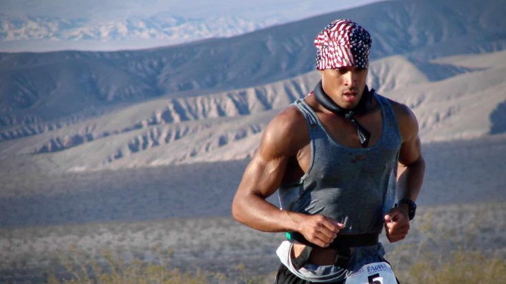
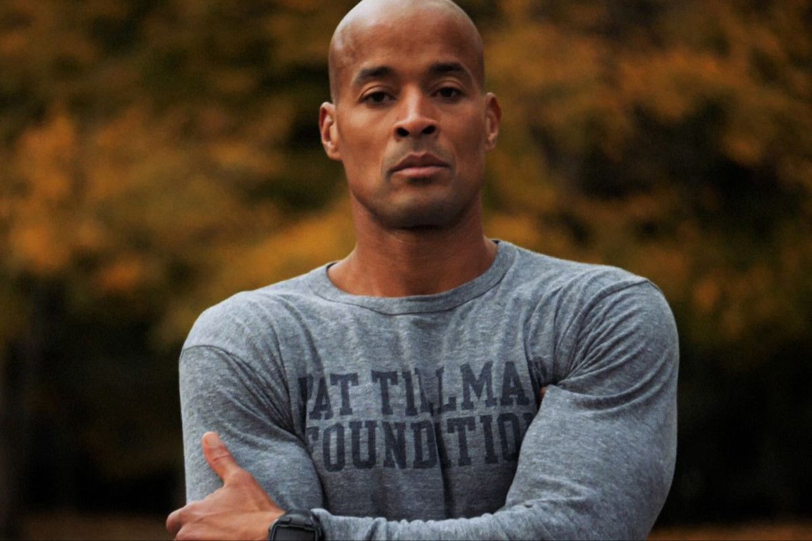
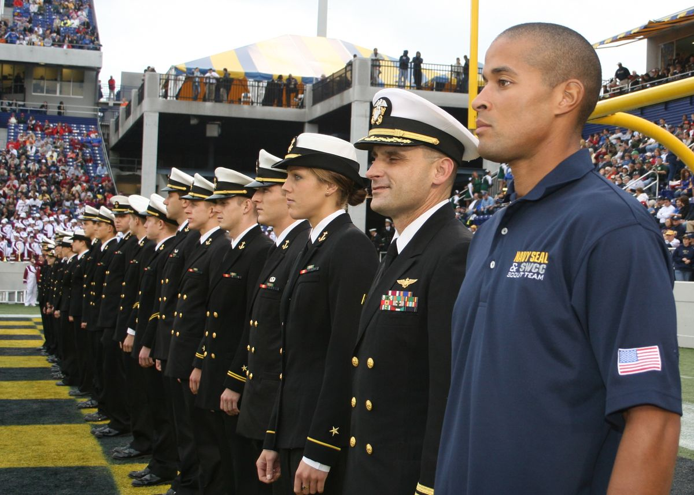
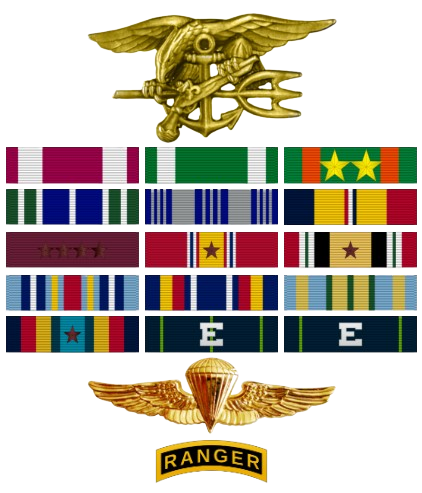

Biodata David Goggins

David Goggins adalah seorang mantan anggota militer Amerika Serikat yang kemudian
dikenal luas sebagai atlet ultra-endurance, penulis buku terlaris, dan pembicara motivasi.
Ia lahir pada 17 Februari 1975 di Buffalo, New York, dan tumbuh dalam lingkungan
keluarga yang penuh tantangan, termasuk kemiskinan, kekerasan dalam rumah tangga,
serta diskriminasi rasial. Masa kecilnya yang sulit membentuk karakter mentalnya yang
keras dan disiplin tinggi.Sebelum dikenal dunia sebagai simbol ketangguhan mental,
Goggins menjalani perjalanan hidup yang tidak mudah. Ia pernah mengalami obesitas, memiliki
kesulitan belajar saat sekolah, dan bekerja sebagai pembasmi hama sebelum memutuskan mengubah
hidupnya secara drastis. Dengan tekad yang kuat, ia menurunkan berat badan secara ekstrem dalam
waktu singkat demi memenuhi syarat masuk pelatihan Navy SEAL, salah satu pelatihan militer
paling berat di dunia. Perjalanan ini menjadi titik balik yang membangun identitasnya
sebagai pribadi yang menolak menyerah.
Edukasi David Goggins

Ia bersekolah di sekolah Katolik kecil sejak kelas dua dan mengikuti Sakramen Komuni Pertama.
Namun, ketika masuk kelas tiga, ia didiagnosis mengalami learning disability (kesulitan belajar)
akibat kurangnya pendidikan yang stabil serta tekanan psikologis yang ia alami sejak kecil.
Trauma masa kecil membuatnya mengalami toxic stress yang berdampak pada kesulitan belajar dan
menyebabkan ia mengalami gagap (stutter). Kondisi ini membuatnya sering merasa cemas secara sosial
dan berada dalam keadaan “fight-or-flight” saat berinteraksi dengan orang lain. Selama masa sekolah,
Goggins juga mengalami tindakan rasisme yang cukup berat di lingkungannya. Ia beberapa kali menjadi
sasaran penghinaan rasial, termasuk ancaman tertulis dan vandalisme terhadap mobilnya saat remaja.
Menjelang tahun pertamanya di sekolah menengah atas, Goggins mengikuti program orientasi pararescue
jump Angkatan Udara. Ketertarikannya pada militer dipengaruhi oleh kakeknya yang sebelumnya pernah
bertugas di Angkatan Udara. Pengalaman ini menjadi awal ketertarikannya pada dunia militer yang kemudian
membentuk perjalanan kariernya di masa depan. Namun, pendidikan terpenting dalam hidupnya justru berasal
dari pelatihan militer yang sangat ketat, seperti:
- Pelatihan United States Air Force sebagai Tactical Air Control Party (TACP)
- Pelatihan BUD/S (Basic Underwater Demolition/SEAL) untuk menjadi Navy SEAL.
- Lulus dari Army Ranger School, salah satu sekolah militer paling berat di dunia, dan meraih predikat Enlisted Honor Man.
Pelatihan-pelatihan inilah yang membentuk disiplin, ketahanan mental, dan karakter kepemimpinannya.
Karir seorang David Goggins

Setelah melalui masa kecil yang penuh tantangan dan berbagai kesulitan dalam pendidikan, David Goggins mulai
mengarahkan hidupnya ke dunia militer. Keputusan ini menjadi titik balik penting dalam hidupnya, karena melalui
lingkungan militer ia membentuk disiplin, ketahanan mental, serta karakter kepemimpinan yang kuat. Perjalanan karier
militernya dimulai dari Angkatan Udara Amerika Serikat sebelum akhirnya ia berhasil mewujudkan impiannya menjadi anggota Navy SEAL,
salah satu satuan elit paling bergengsi di dunia.
- United States Air Force
David Goggins awalnya mendaftar untuk bergabung dengan program Pararescue Angkatan Udara Amerika Serikat
(United States Air Force Pararescue) dan diterima dalam pelatihan. Namun, selama masa pelatihan ia didiagnosis
memiliki sickle cell trait (kelainan genetik sel darah), sehingga untuk sementara dikeluarkan dari program tersebut.
Sebagai alternatif, ia mengikuti pelatihan Tactical Air Control Party (TACP) dan bertugas sebagai anggota TACP dari
tahun 1994 hingga 1999. Setelah lima tahun berdinas, ia keluar dari Angkatan Udara.
- United States Navy (Navy SEAL)
Setelah keluar dari Angkatan Udara, Goggins sempat bekerja sebagai pembasmi hama. Ia kemudian memutuskan berhenti
dari pekerjaannya untuk mengejar impiannya menjadi Navy SEAL. Untuk memenuhi persyaratan fisik, ia berhasil menurunkan
berat badan sekitar 48 kg (106 pon) hanya dalam waktu tiga bulan agar memenuhi standar masuk pelatihan. Ia akhirnya lulus
dari pelatihan BUD/S (Basic Underwater Demolition/SEAL) pada tahun 2001 bersama kelas 235. Setelah menyelesaikan SEAL Qualification Training (SQT)
dan masa percobaan, ia resmi mendapatkan kualifikasi sebagai Combatant Swimmer (SEAL) dan ditugaskan ke SEAL Team 5. Selama sekitar 20 tahun karier
militernya, Goggins juga menjalani penugasan di Irak. Pada tahun 2004, ia lulus dari Army Ranger School dan meraih penghargaan “Enlisted Honor Man”
dengan evaluasi rekan sejawat 100%.
Penghargaan dan Prestasi
Setelah menyelesaikan karier militernya, David Goggins dikenal luas sebagai atlet ultra-endurance, penulis, dan pembicara motivasi.
Ia membangun reputasi melalui pencapaian luar biasa dalam berbagai kompetisi olahraga ekstrem serta kontribusinya di bidang pengembangan diri.
Ketangguhan mental dan fisiknya membuatnya mendapat pengakuan internasional, baik melalui rekor dunia, partisipasi dalam ajang olahraga paling berat di dunia,
maupun melalui karya tulisnya yang menjadi buku terlaris.
1. Penghargaan

| Special Warfare insignia |
| Meritorious Service Medal |
Navy and Marine Corps Commendation Medal |
Navy and Marine Corps Achievement Medal with 2 5/16 inch stars |
| Army Achievement Medal |
Air Force Achievement Medal |
Combat Action Ribbon |
| Navy Good Conduct Medal with 4 Service Stars |
National Defense Service Medal with 1 Service star |
Iraq Campaign Medal with 1 Service star |
| Global War on Terrorism Expeditionary Medal |
Global War on Terrorism Service Medal |
Military Outstanding Volunteer Service Medal |
| Navy and Marine Corps Sea Service Deployment Ribbon with 1 Service star |
Rifle Marksmanship Medal with Expert Device |
Pistol Marksmanship Medal with Expert Device |
| Navy and Marine Corps Parachutist Badge |
| Ranger Tab |
2. Prestasi
| No. |
Bidang |
Prestasi |
Keterangan |
| 1. |
Olahraga |
Rekor Dunia Guiness Pull-Up |
4.030 pull-up dalam 17 jam (rekor saat itu) |
| 2. |
Olahraga |
Badwater 135 |
Menyelesaikan salah satu ultramarathon terberat didunia |
| 3. |
Olahraga |
Moab 240 |
Menyelesaikan lomba lari ekstrem 240 mil |
| 4. |
Penghargaan |
International Sports Hall of Fame (2019) |
Pengakuan atas kontribusi di bidang olahraga |
| 5. |
Penulisan |
Can't Hurt Me(2018) |
New York Times Bestseller |
| 6. |
Penulisan |
Never Finished(2022) |
Buku motivasi dengan pengakuan internasional |